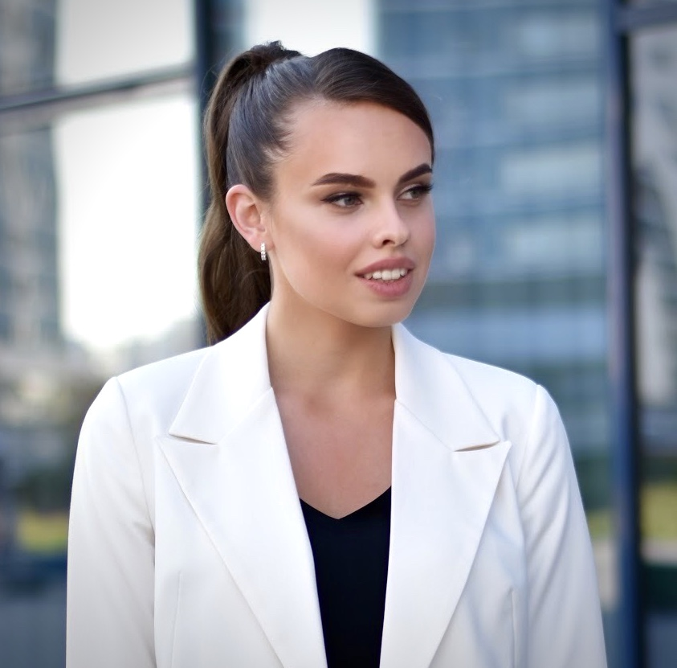

Личные данные
ФИО
Качан Виктория Александровна
Дата рождения
09.07.2002
Гражданство
Республика Беларусь
Номер телефона
+79890489589
Email
tory.kachan.02@bk.ru
Качества
- Добросовестность
- Коммуникабельность
- Желание развиваться и узнавать новое
- Усидчивость
- Эмоциональная устойчивость
- Ответственность
Качан Виктория Александровнa
Опыт работы
04.2021-
07.2021 |
Алавир
Верстальщик
- Верстка HTML/CSS/JavaScript на основе макетов, созданных дизайнером
- Тестирование веб-сайтов
- Работа с дизайнерскими программами: пакет Adobe(Photoshop, ImageReader, Illustrator), Corel Draw.
|
04.2022-
09.2023 |
Минский государственный лингвистический университет
Техник-программист
- Техническая поддержка веб-сайта
- Доработка и улучшение функциональности веб-сайта
- Наполнение контентом Интернет-портала, мобильного приложения и социальных сетей, включая публикацию текстовой и мультимедийной информации.
- Редактирование и обновление информации на сайте и в приложении для поддержания актуальности контента.
- Оформление информации с учетом художественных аспектов, создание привлекательного и легко читаемого дизайна для пользователей.
Достижения
- Внесение значительных улучшений в дизайн и оформление информационных ресурсов, что привело к улучшению пользовательского восприятия.
- Эффективное управление контентом, обеспечившее повышение числа посетителей и увеличение вовлеченности на веб-ресурсах.
|
Образование
| 09.2018-02.2022 |
БГУИР филиал «Минский радиотехнический колледж»
Специальность "Программируемые мобильные системы" |
| 09.2022-02.2026 |
Белорусский государственный университет информатики и радиоэлектроники
Специальность "Программное обеспечение информационных технологий" |
Курсы
| 2020 |
УО БГУИР филиал "МРК"
«Оператор электронно-вычислительных машин» 4 разряда |
| 2021 |
WAYUP
"Веб-верстальщик" |
| 2021 |
1C-Битрикс
"Контент-менеджер" |
Проекты
«Мобильный навигатор для людей с инвалидностью INVO»
Помощь в разработке и мониторинг данных для сбора данных в приложение.
Проект победил в республиканском конкурсе «100 идей для Беларуси-2019». Был признан лучшим в номинации «Информационно-коммуникационные и авиакосмические технологии».
Дополнительная информация
Являюсь волонтером UNICEF с 2019 года.
Окончила музыкальную школу, участвую в мероприятиях по художественной самодеятельности. Владею игрой на фортепиано.